Main species that you can encounter on the reef
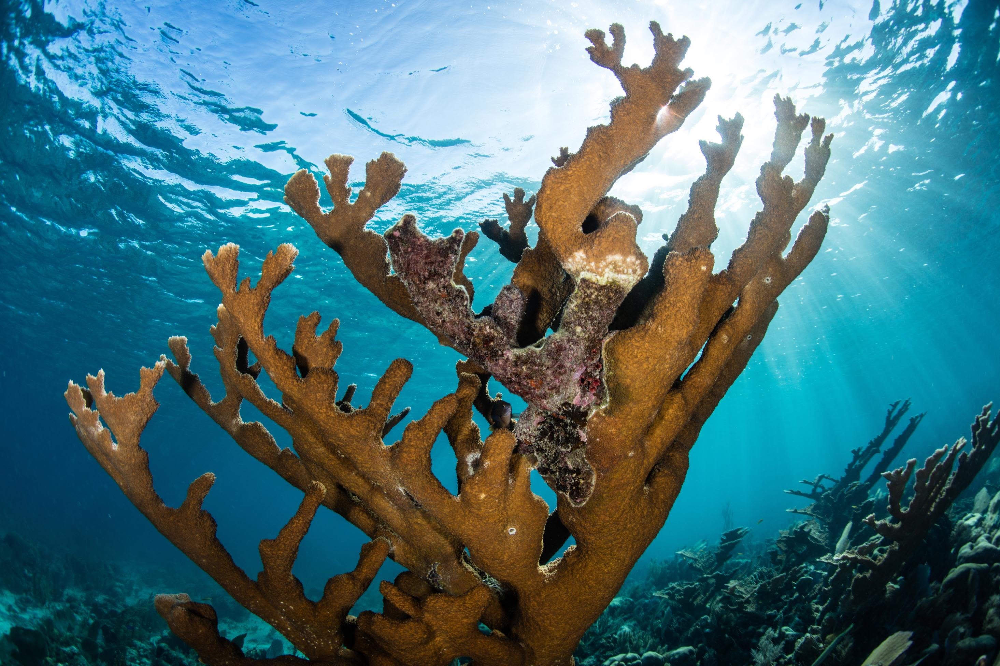
Elkhorn Coral
- Scientific Name: Acropora palmata
- IUCN Status: Critically Endangered (CR)
- Growth Rate: 5 to 10 cm per year
- Depth: 0 to 5 meters
- Habitat: Reef crests, high-wave energy zones
- Skeleton Type: Branching, broad flat branches
- Key Feature: Its massive branches break the force of waves, protecting coastlines from erosion.
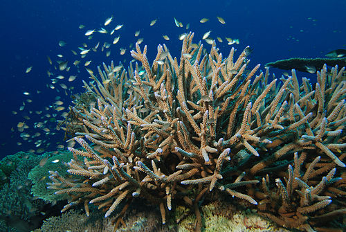
Staghorn Coral
- Scientific Name: Acropora cervicornis
- IUCN Status: Critically Endangered (CR)
- Growth Rate: 10 to 15 cm per year
- Depth: 5 to 30 meters
- Habitat: Deep lagoons and fore-reef slopes
- Skeleton Type: Branching, thin cylindrical branches
- Key Feature: It is the fastest-growing species in the Caribbean, forming dense thickets that serve as fish nurseries.
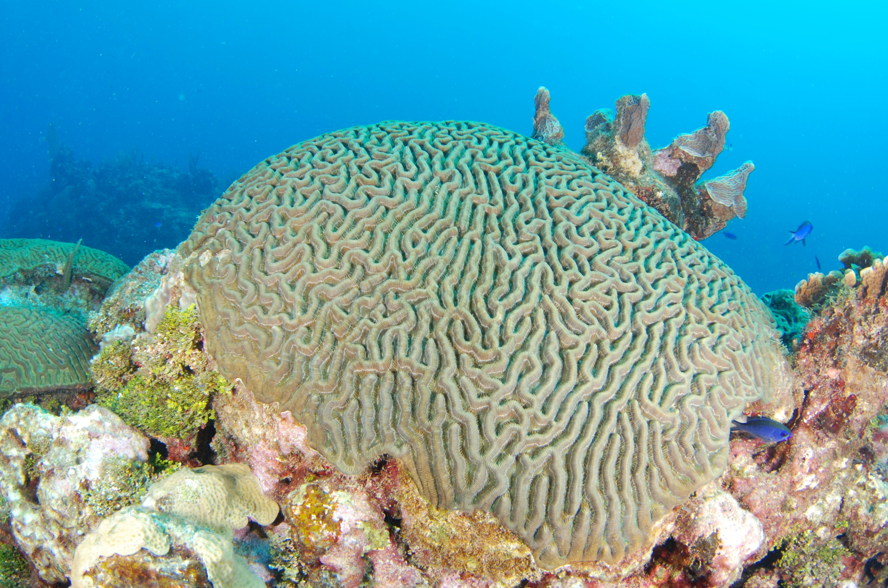
Symmetrical Brain Coral
- Scientific Name: Pseudodiploria strigosa
- IUCN Status: Least Concern (LC)
- Growth Rate: 0.5 to 1 cm per year
- Depth: 1 to 40 meters
- Habitat: Clear reef flats
- Skeleton Type: Massive, smooth dome-shaped
- Key Feature: Closely resembles the human brain; it is extremely solid and can live for several centuries.
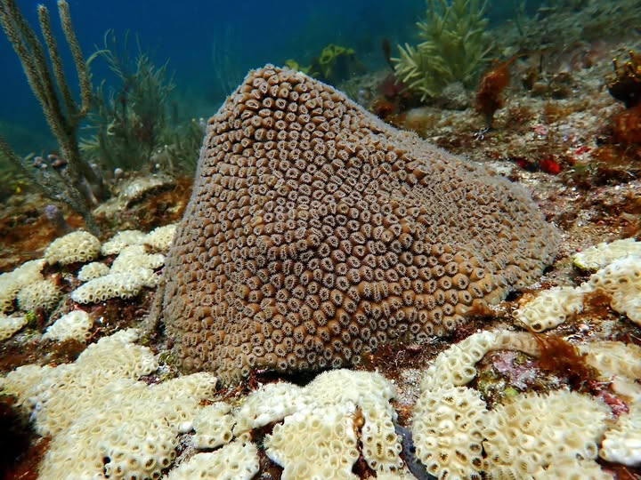
Great Star Coral
- Scientific Name: Montastraea cavernosa
- IUCN Status: Least Concern (LC)
- Growth Rate: 0.3 to 0.8 cm per year
- Depth: 10 to 60 meters
- Habitat: External reef slopes
- Skeleton Type: Massive, large protruding calices
- Key Feature: Often displays striking red or green fluorescence under blue actinic light.
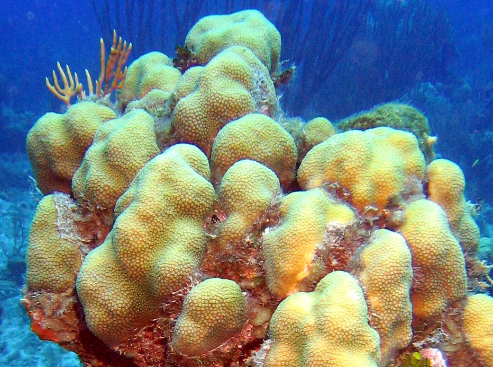
Lobed Star Coral
- Scientific Name: Orbicella annularis
- IUCN Status: Endangered (EN)
- Growth Rate: 0.5 to 1.2 cm per year
- Depth: 0 to 80 meters
- Habitat: Intermediate reef zones
- Skeleton Type: Massive, pillar or lobe-shaped
- Key Feature: One of the primary builders of the Belize Barrier Reef, forming monumental structures.
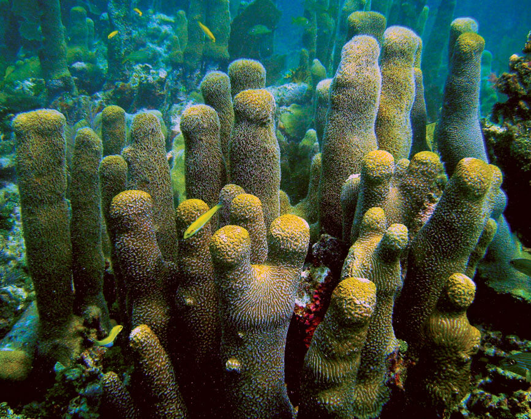
Pillar Coral
- Scientific Name: Dendrogyra cylindrus
- IUCN Status: Vulnerable (VU)
- Growth Rate: 0.8 to 2 cm per year
- Depth: 1 to 25 meters
- Habitat: Sandy floors or reef flats
- Skeleton Type: Vertical columns (pillars)
- Key Feature: Unlike most corals, its polyps remain extended during the day, giving it a furry appearance.
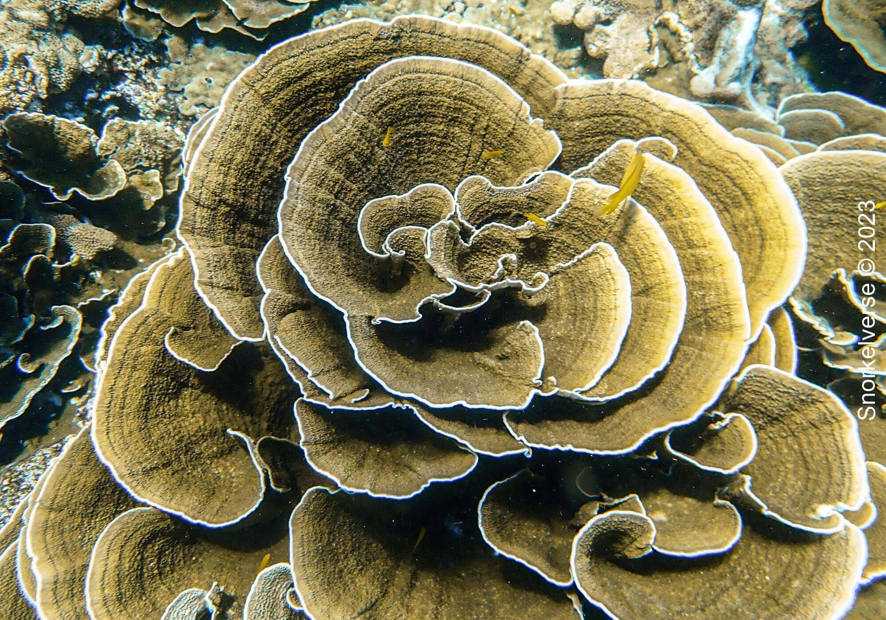
Lettuce Coral
- Scientific Name: Agaricia agaricites
- IUCN Status: Least Concern (LC)
- Growth Rate: 1 to 3 cm per year
- Depth: 5 to 70 meters
- Habitat: Vertical walls, shaded areas
- Skeleton Type: Foliaceous (leaf or plate-like)
- Key Feature: Highly adaptable to low light, it often colonizes the darker corners of the reef.
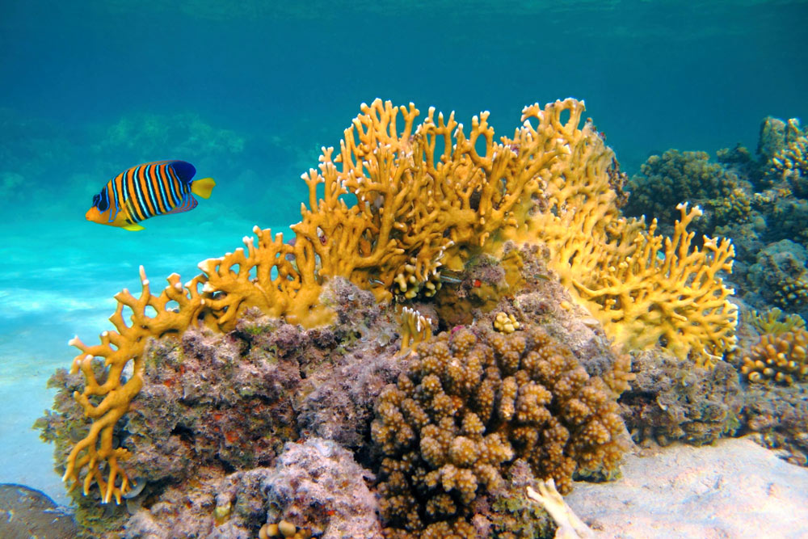
Fire Coral
- Scientific Name: Millepora alcicornis
- IUCN Status: Not Evaluated (NE)
- Growth Rate: Fast (Invasive)
- Depth: 1 to 40 meters
- Habitat: Strong current zones
- Skeleton Type: Encrusting or branching Hydrozoan
- Key Feature: Not a true coral; it possesses stinging cells that cause immediate burning sensations upon contact.
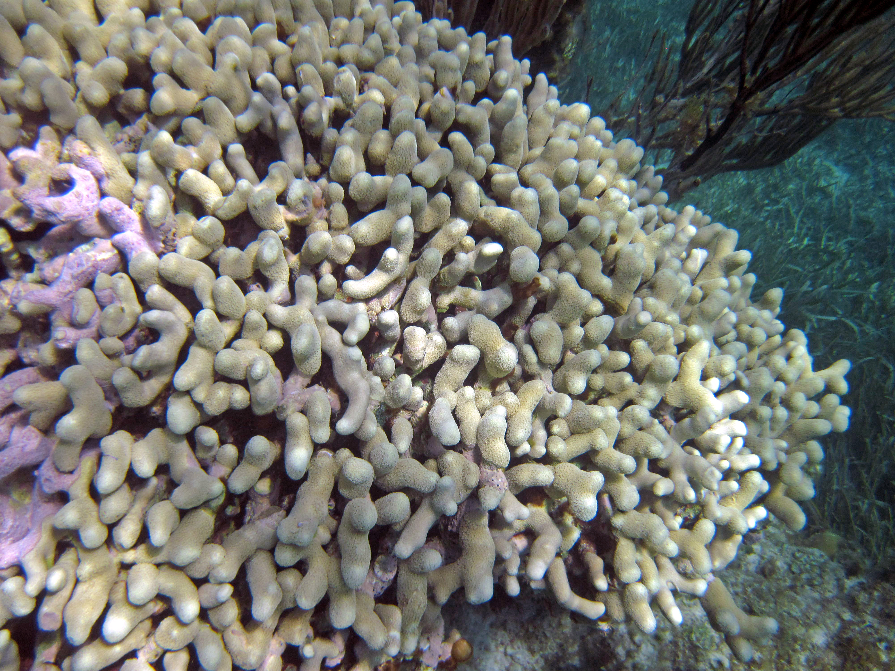
Finger Coral
- Scientific Name: Porites porites
- IUCN Status: Least Concern (LC)
- Growth Rate: 1.5 to 2.5 cm per year
- Depth: 0 to 25 meters
- Habitat: Shallow lagoons, turbid areas
- Skeleton Type: Branching, short thick fingers
- Key Feature: Better at tolerating cloudy water and sedimentation than most other hard coral species.
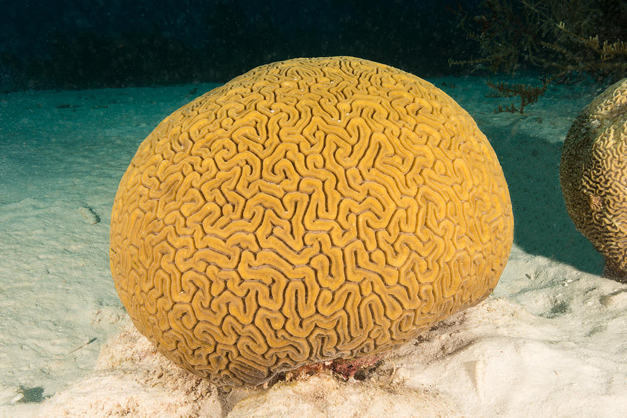
Grooved Brain Coral
- Scientific Name: Diploria labyrinthiformis
- IUCN Status: Least Concern (LC)
- Growth Rate: 0.4 to 0.7 cm per year
- Depth: 1 to 30 meters
- Habitat: Exposed reef areas
- Skeleton Type: Massive, ridges with distinct grooves
- Key Feature: Distinguished by wide winding valleys that form a complex, labyrinth-like network.
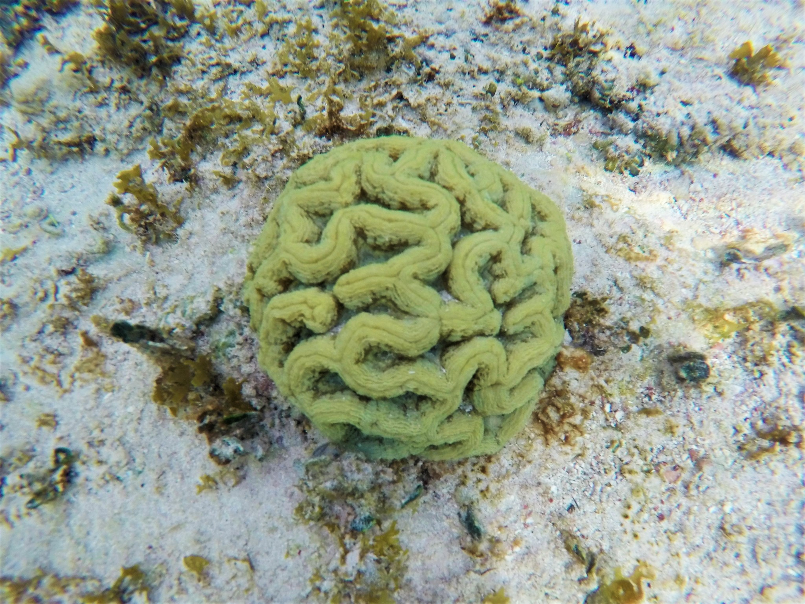
Sinuous Cactus Coral
- Scientific Name: Isophyllia sinuosa
- IUCN Status: Least Concern (LC)
- Growth Rate: Very slow
- Depth: 1 to 15 meters
- Habitat: Protected reefs, seagrass beds
- Skeleton Type: Massive, very fleshy ridges
- Key Feature: Its tissue is very thick and colorful, almost entirely masking the rigid skeleton beneath.
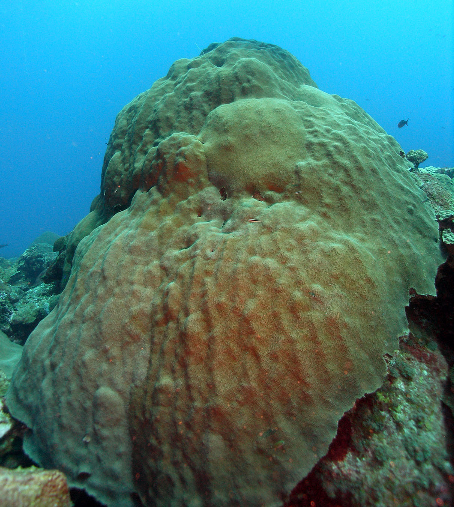
Mountainous Star Coral
- Scientific Name: Orbicella faveolata
- IUCN Status: Endangered (EN)
- Growth Rate: 0.3 to 1 cm per year
- Depth: 1 to 40 meters
- Habitat: Upper reef slopes
- Skeleton Type: Massive, bumpy mounds
- Key Feature: Often forms wide "skirts" of tissue at its base to expand over neighboring rocks.